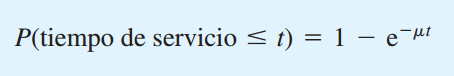
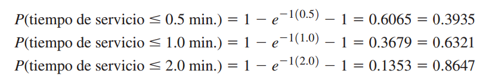

Defnición.
El tiempo de servicio es el tiempo que un cliente emplea en la instalación de servicio una vez que éste se ha iniciado. En Burger Dome, el tiempo de servicio se inicia cuando un cliente comienza a hacer el pedido con el despachador y continúa hasta que el cliente recibe el pedido.
Los tiempos de servicio rara vez son constantes. En Burger Dome, el número de productos y la combinación de estos pedidos varían considerablemente de un cliente al siguiente. Los pedidos pequeños pueden manejarse en cuestión de segundos, pero los grandes pueden requerir más de dos minutos.
Los analistas cuantitativos determinaron que si se puede suponer que la distribución probabilística del tiempo de servicio sigue una distribución probabilística exponencial, existen fórmulas que proporcionan información útil sobre la operación de la línea de espera.
Utilizando una distribución probabilística exponencial, la probabilidad de que el tiempo de servicio sea menor que o igual a un tiempo de duración t es:

- donde:
- μ = número medio de unidades que pueden ser atendidas por periodo de tiempo
- e = 2.71828

El número medio de unidades que pueden ser atendidas por periodo de tiempo, μ, se llama tasa de servicio.
Suponga que Burger Dome estudió el proceso de toma y entrega de pedido y encontró que un despachador puede procesar un promedio de 60 pedidos por hora. Basada en un minuto, la tasa de servicio sería μ = 60 clientes/60 minutos = 1 cliente por minuto.
Por ejemplo, con μ = 1, podemos utilizar la ecuación para calcular probabilidades como la probabilidad de que un pedido pueda ser procesado en 1/2 minuto o menos, 1 minuto o menos y 2 minutos o menos. Estos supuestos son:
